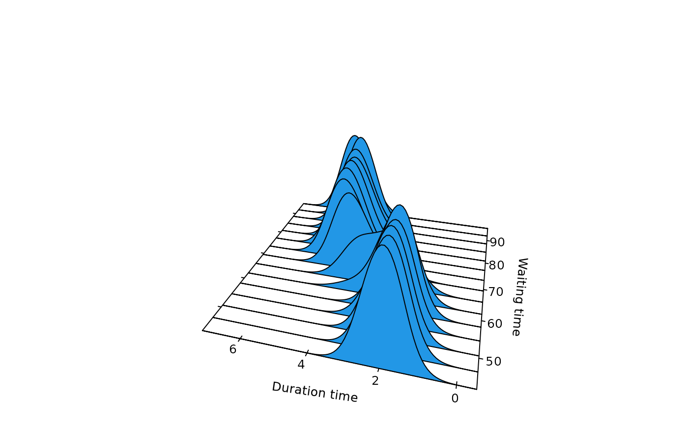
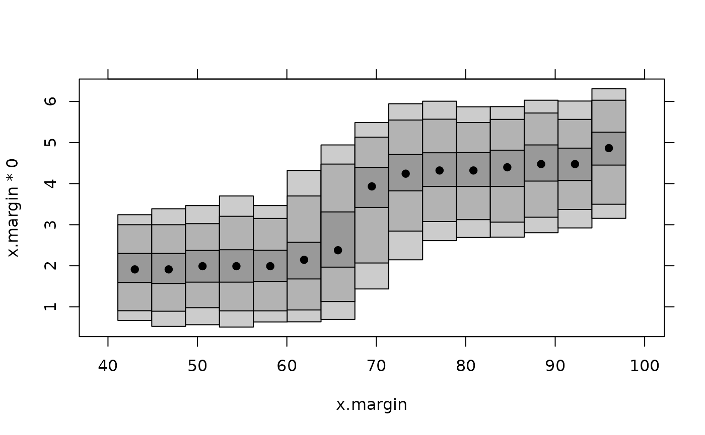

Produces stacked density plots or highest density region plots for a univariate density conditional on one covariate.
# S3 method for cde plot( x, firstvar = 1, mfrow = n2mfrow(dim(x$z)[firstvar]), plot.fn = "stacked", x.name, margin = NULL, ... )
| x | Output from |
|---|---|
| firstvar | If there is more than one conditioning variable,
|
| mfrow | If there is more than one conditioning variable, |
| plot.fn | Specifies which plotting function to use: "stacked" results in stacked conditional densities and "hdr" results in highest density regions. |
| x.name | Name of x (conditioning) variable for use on x-axis. |
| margin | Marginal density of conditioning variable. If present, only conditional densities corresponding to non-negligible marginal densities will be plotted. |
| ... | Additional arguments to plot. |
If plot.fn=="stacked" and there is only one conditioning
variable, the function returns the output from
persp. If plot.fn=="hdr" and there is only
one conditioning variable, the function returns the output from
hdr.cde. When there is more than one conditioning variable,
nothing is returned.
Hyndman, R.J., Bashtannyk, D.M. and Grunwald, G.K. (1996) "Estimating and visualizing conditional densities". Journal of Computational and Graphical Statistics, 5, 315-336.
Rob J Hyndman
faithful.cde <- cde(faithful$waiting,faithful$eruptions, x.name="Waiting time", y.name="Duration time") plot(faithful.cde)